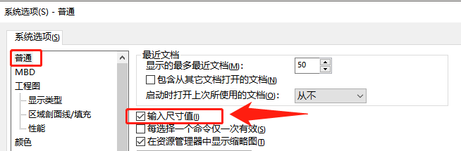
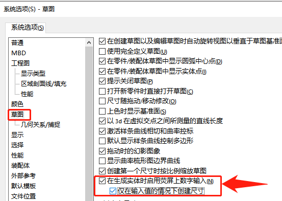
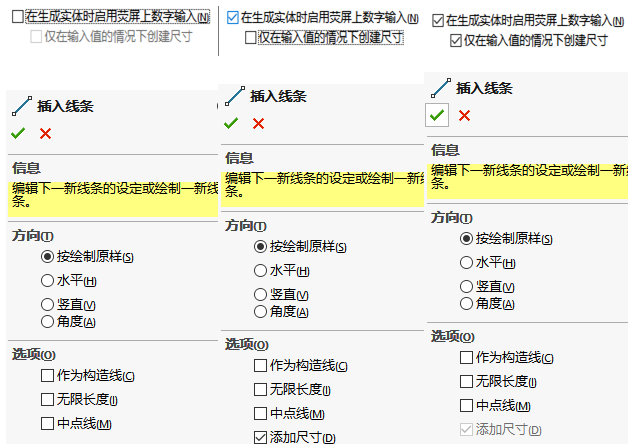
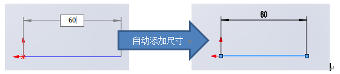
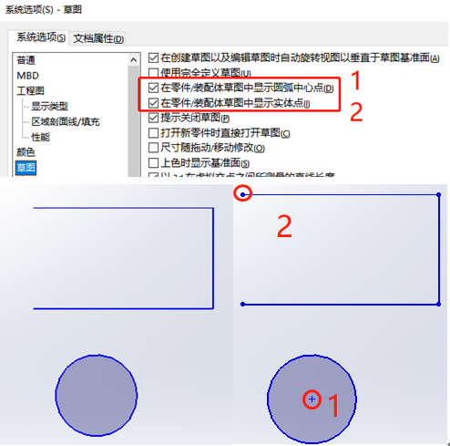
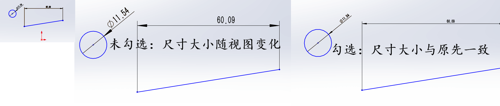
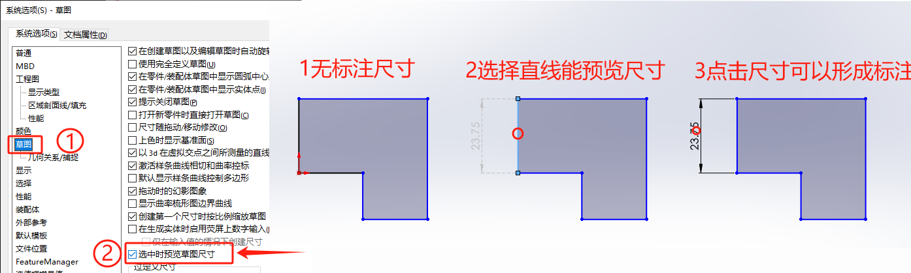

SOLIDWORK教程-草图
草图实体
草图修改
草图设置
编辑问题
标注尺寸时，发现标注完无法输入尺寸值，需要额外双击才能进入编辑。你可以勾选【系统选项-普通-输入尺寸值】
自动标注问题
勾选【系统选项-草图-在生成实体时启用荧屏上数字输入】，那么在绘制草图的同时输入尺寸值，仅在输入值的情况下创建尺寸（该选项会顺便生成尺寸标注）
下面是设置前后，在绘制草图时的编辑页。其中”选项”中就会多一项”添加尺寸”的可选项。
在你绘制草图实体的同时，输入尺寸数值。则这个尺寸也会自动添加。
草图端点显示问题
草图尺寸大小显示
【文档属性-出详图-始终以相同大小显示文字】
选中时预览草图尺寸
选中时预览草图尺寸
Q&A
Q草图复制（Ctrl+C/Ctrl+V）几何关系是否丢失？
A我自测是没丢，但似乎有些电脑会丢失，成蓝色未定义的草图
套合样条曲线使用和解散：见视频